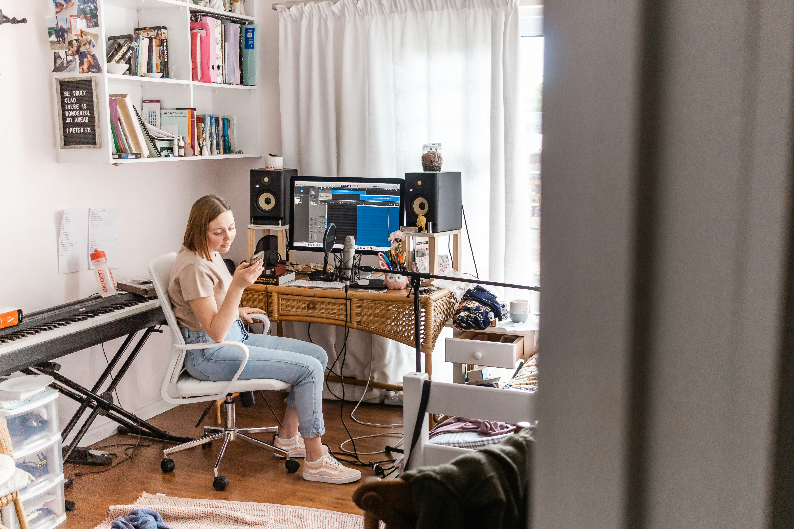
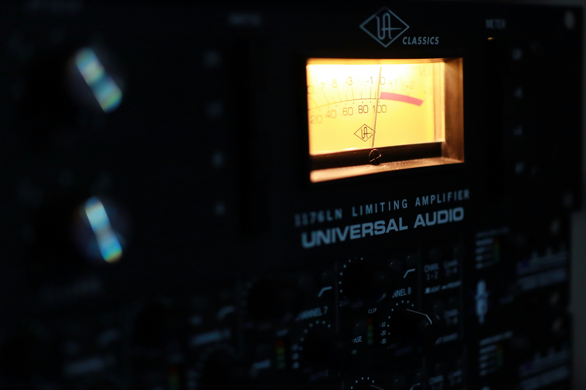

Co to jest DAW? Kompletny przewodnik
Czym jest cyfrowa stacja robocza, z czego się składa i jak różni się od zwykłego edytora audio.
CzytajDAW (Digital Audio Workstation) to program, w którym nagrywasz, układasz, edytujesz i miksujesz muzykę. To centrum dowodzenia całej produkcji - od pierwszego pomysłu po gotowy plik. Wyjaśniamy, z czego się składa, czym różni się od zwykłego edytora audio i jak wybrać swój pierwszy.
Przeczytaj przewodnikCzym jest cyfrowa stacja robocza, z czego się składa i jak różni się od zwykłego edytora audio.
CzytajPrzegląd głównych DAW-ów: platformy, mocne strony i dla kogo każdy z nich jest najlepszy.
Czytaj
Co dzieje się na każdym z etapów, w jakiej kolejności następują i jakie mity warto obalić.
Czytaj
Praktyczny przewodnik: co naprawdę potrzebne na start, pierwsze kroki i czego unikać.
Czytaj
Jak wybrać mikrofon, ustawić akustykę pokoju domowymi sposobami i nagrać czysty wokal bez drogiego studia.
Czytaj
Czym jest equalizer, jakie ma rodzaje i jak używać go w miksie - od high-pass filtra po kształtowanie barwy instrumentów.
Czytaj
Threshold, ratio, attack, release - poznaj parametry kompresora i dowiedz się, kiedy i jak używać kompresji bez przekompresowania.
CzytajPoznaj DAW - program, w którym powstaje cała muzyka. Sprawdź, czym jest DAW.
Porównaj popularne DAW-y i znajdź ten dla siebie. Zobacz przegląd programów.
Dowiedz się, co realnie potrzebne na start. Przeczytaj poradnik startowy.
Zrozum, co naprawdę robią te etapy. Poznaj różnice.